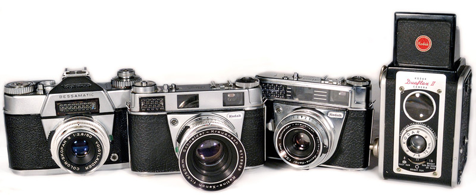
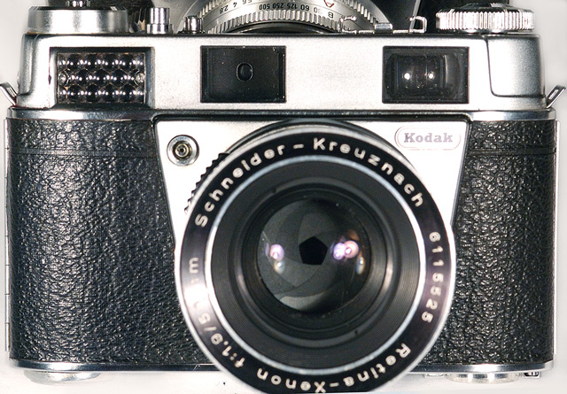
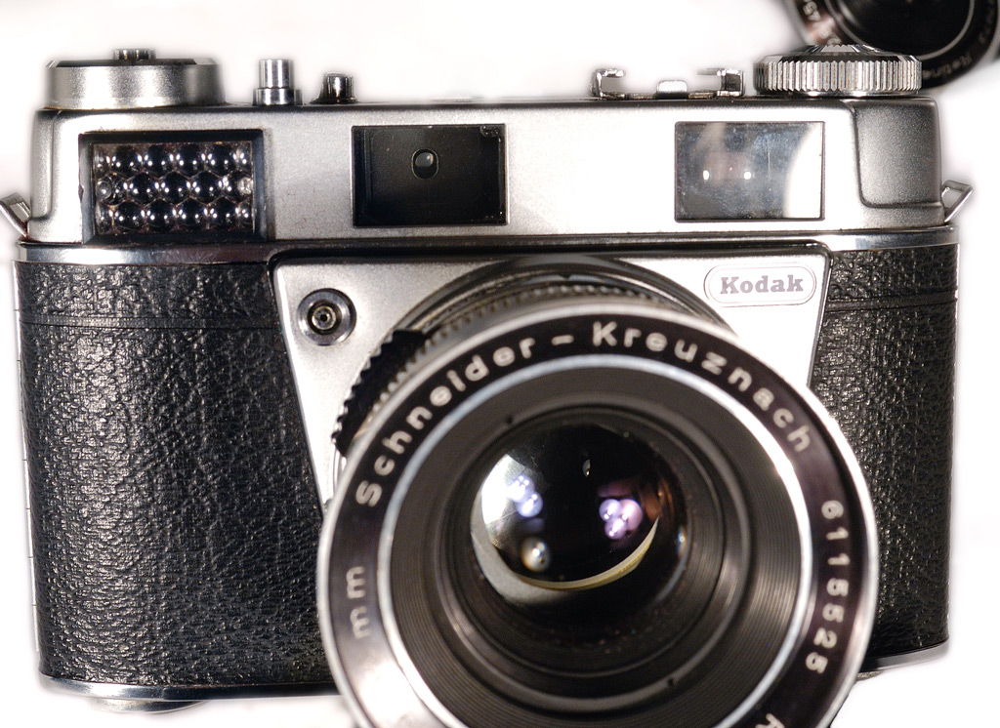
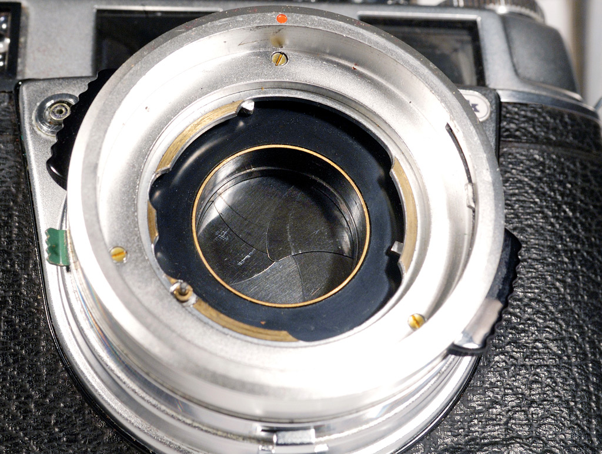
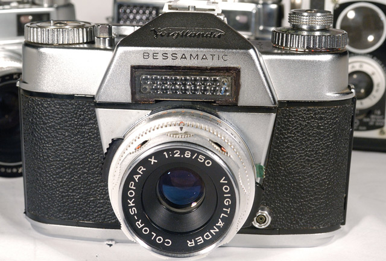

The four cameras above are of special interest to me. The two on the left, the Voightlander Bessamatic and the Kodak Retina IIIS both have behind the lens leaf shutters. The two on the right, the Kodak Retina Automatic III and the Kodak Duaflex II have between the lens leaf shutters. The Retina IIIS uses the same lenses as the Retina Reflex S, III, and IV. It was one of the few rangefinder cameras that used a a behind the lens leaf shutter. The IIIs is the only rangefinder camera that I know of that uses the same lenses as its single lens reflex counterpart. The Retina series and the Bessamatic, essentially used the same lens mount, so that with a simple modification lenses are interchangeable between the two.
The Kodak Duaflex II is the first camera that my brother and I bought while we were in grade school. It helped us to develop and interest in photography. It was unusual in that it has essentially a box camera with a two element achromatic lens, with adjustable F-stops that could be focused.
|
photographs by bernard Other Cameras with Leaf Shutters |
||||||||
|  | ||||||||
|  | ||||||||
|  | ||||||||
|  | ||||||||
|  | ||||||||
Bessamatic, Retinas, and Kodak duaflex